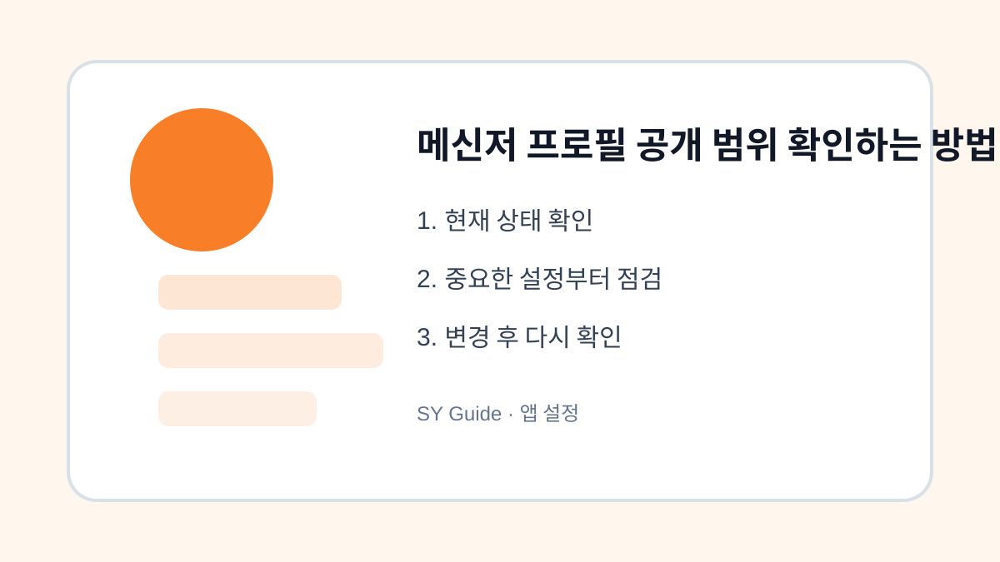

메신저 프로필 공개 범위 확인하는 방법
프로필 사진, 상태 메시지, 친구 추천, 전화번호 검색 허용 범위를 확인해 개인정보 노출을 줄입니다.

메신저 프로필은 생각보다 많은 정보를 보여줄 수 있습니다. 프로필 사진, 상태 메시지, 배경 이미지, 생일, 전화번호 검색 허용 여부가 다른 사람에게 노출될 수 있습니다. 오래전에 설정한 공개 범위를 주기적으로 확인하는 것이 좋습니다.
프로필 사진과 상태 메시지
프로필 사진에는 집, 학교, 회사, 차량번호 같은 정보가 들어갈 수 있습니다. 상태 메시지도 현재 위치나 일정이 드러나지 않도록 조심합니다. 공개 범위를 친구로 제한하거나 필요 없는 정보는 삭제합니다.
친구 추천과 검색 허용
전화번호로 나를 찾을 수 있는 설정이나 친구 추천 기능은 편리하지만 원치 않는 사람이 나를 찾을 수도 있습니다. 업무용 번호와 개인 번호가 섞여 있다면 특히 확인이 필요합니다.
| 항목 | 확인 이유 | 권장 |
|---|---|---|
| 프로필 사진 | 생활정보 노출 | 민감 정보 제외 |
| 상태 메시지 | 일정 노출 | 간단히 작성 |
| 검색 허용 | 원치 않는 추가 | 필요 시 제한 |
앱 설정을 바꾸기 전 마지막 점검
- 프로필 사진에 민감 정보가 없는지 확인하기
- 상태 메시지에서 위치와 일정 노출 줄이기
- 전화번호 검색 허용 여부 확인하기
- 친구 추천 설정 점검하기
- 업무용과 개인용 계정을 구분하기
메신저 프로필은 작은 설정이지만 개인정보와 연결됩니다. 익숙한 앱일수록 한 번 더 공개 범위를 확인해두세요.
메신저 프로필 공개 범위 확인하는에서 먼저 열어볼 메뉴
메신저 프로필 공개 범위 확인하는은 앱 내부 설정과 스마트폰 설정이 따로 움직일 수 있습니다. 앱 안에서 알림, 기록, 공개 범위를 확인한 뒤 스마트폰 설정에서 권한과 알림 허용 범위를 다시 보는 순서가 좋습니다.
메신저 프로필 공개 범위 확인하는 변경 후 확인할 점
설정을 바꾼 뒤에는 실제 알림이 오는지, 위치 기능이 필요한 순간에 작동하는지, 사진이나 마이크 접근이 막히지 않았는지 확인하세요. 필요한 기능까지 끄면 사용성이 떨어질 수 있습니다.
메신저 프로필 공개 범위 확인하는 관련 공식 확인처
확인 기준: 2026.06.27 · 작성/검토: SY Guide 편집팀 · 정정 문의: issuebara@gmail.com